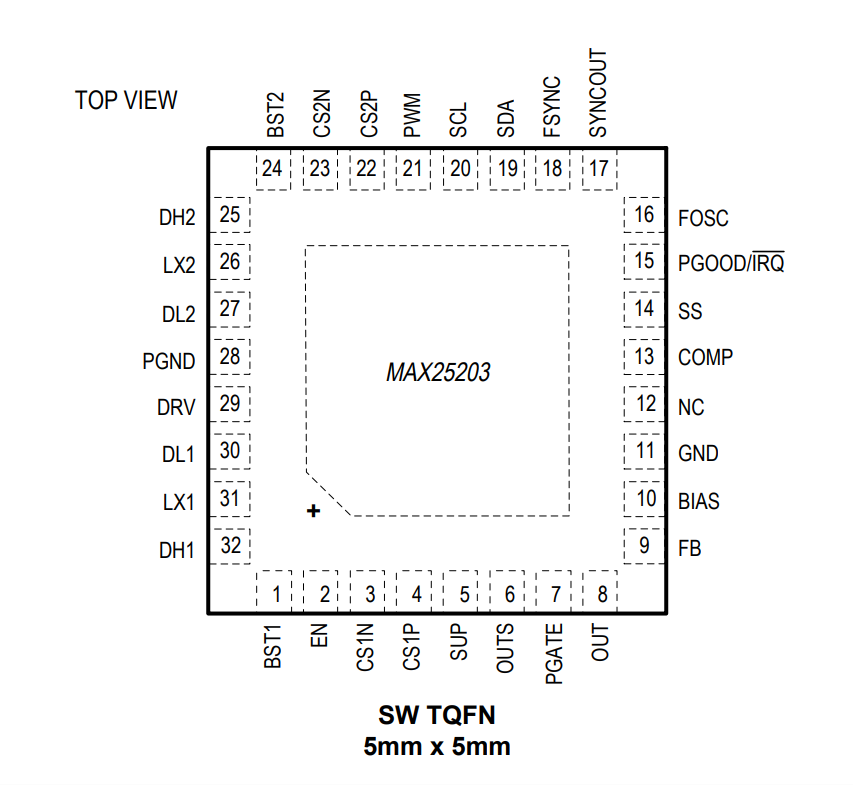

MAX25203

Pin Description
| PIN | NAME | FUNCTION |
|---|---|---|
| 1 | BST1 | Boost Flying Capacitor Connection for High-Side Gate Voltage. Connect a high-voltage diode between DRV and BST1. Connect a ceramic capacitor between BST1 and LX1. See the High-Side Gate-Driver Supply (BST) section. |
| 2 | EN | High-Voltage Tolerant, Active-High Digital Enable Input for Controller. Driving EN low disables the boost controller. EN also has a very accurate threshold of ±3% for both rising and falling voltages. A resistor-divider can be used to control the turn ON and OFF of the boost controller in hardware by using a resistor-divider. When EN is low, the MAX25203 is powered off, including BIAS and I2C interface. Bring EN high to enable the MAX25203 and power up into the default state. |
| 3 | CS1N | egative Current-Sense Input for Phase 1. Connect CS1N to the negative side of the current-sense element. See the Current Limiting and Current-Sense Inputs (SUP and CS) section. |
| 4 | CS1P | Positive Current-Sense Input for Phase 1. Connect CS1P to the positive side of the current-sense element. See the Current Limiting and Current-Sense Inputs (SUP and CS) section. |
| 5 | SUP | Supply Input. Connect SUP to the main battery. |
| 6 | OUTS | True Shutdown PFET's Source Connection. |
| 7 | PGATE | External p-Channel MOSFET Gate Connection. Connect PGATE to the gate of the external pchannel output disconnect switch. Connect PGATE to GND if not used. |
| 8 | OUT | Output Voltage Sense for Internal Feedback Divider. Connect OUT to the boost output. |
| 9 | FB | Boost Converter Feedback Input. Connect FB to BIAS to use the I2C programmed output voltage or PWM voltage control. For external feedback, connect FB to the center tap of a resistor-divider between the boost regulator output. FB regulates to 1V (typ). See the Setting and Controlling the Output Voltage section. |
| 10 | BIAS | 5V Internal Linear Regulator Output. Bypass BIAS to GND with a low-ESR ceramic capacitor of 1µF minimum value. BIAS provides the power to the internal circuitry and external loads. See the Fixed 5V Linear Regulator (BIAS) section. |
| 11 | GND | Ground. |
| 12 | NC | Leave this pin unconnected. |
| 13 | COMP | Boost Controller Error Amplifier Output. Connect an RC network to COMP to compensate the boost converter. |
| 14 | SS | Soft-Start. Connect a capacitor from SS to GND to set the soft-start time. See the Soft-Start section. |
| 15 | PGOOD/IRQ | Open-Drain Power-Good Output or Interrupt Request. This pin is configured as either a powergood (PGOOD) output or interrupt request (IRQ) output (see the Ordering Information table). To obtain a logic signal, pull up PGOOD/IRQ with an external resistor connected to a positive voltage lower than 5.5V. PGOOD pulls low when OUT is more than 93% (typ) below the normal regulation point. PGOOD is low during soft-start and in shutdown. PGOOD becomes high impedance when OUT is in regulation. IRQ pulls low when OUT is more than 93% (typ) below the normal regulation point and when a fault is reported in the FAULT register. IRQ is low during shutdown, and remains low after startup until the FAULT register has been read. IRQ becomes high impedance after reading the FAULT_STAT register when OUT is in regulation. If there is a persistent fault, IRQ pulls low again after reading FAULT, otherwise IRQ remains high until a fault occurs. |
| 16 | FOSC | Frequency Setting Input. Connect a resistor to FOSC to set the switching frequency of the DC-DC converters. |
| 17 | SYNCOUT | Synchronization Clock Output. SYNCOUT outputs a clock that is 90° out-of-phase with the internal oscillator or the external FSYNC input. For the quad-phase configuration, connect SYNCOUT of the main controller to FSYNC of the subordinate. |
| 18 | FSYNC | External Clock Synchronization Input. To synchronize with an external clock, connect the clock to FSYNC. See the Oscillator Frequency/External Synchronization section. When not using external synchronization, connect FSYNC to BIAS for forced-PWM operation with the internal clock, or connect FSYNC to GND for skip-mode operation. |
| 19 | SDA | I2C Data Input/Output. |
| 20 | SCL | I2C Clock Input/Output |
| 21 | PWM | PWM Positioning Control Input. Controls the output voltage, allowing it to track a digital duty cycle (PWM) signal. Connect PWM to GND when using an external resistor-divider to set the output voltage or if PWM is not used. |
| 22 | CS2P | Positive Current-Sense Input for Phase 2. Connect CS2P to the positive side of the current-sense element. See the Current Limiting and Current-Sense Inputs (SUP and CS) section. |
| 23 | CS2N | Negative Current-Sense Input for Phase 2. Connect CS2N to the negative side of the currentsense element. See the Current Limiting and Current-Sense Inputs (SUP and CS) section. |
| 24 | BST2 | Boost Flying Capacitor Connection for High-Side Gate Voltage. Connect a high-voltage diode between DRV and BST2. Connect a ceramic capacitor between BST2 and LX2. See the High-Side Gate-Driver Supply (BST) section. |
| 25 | DH2 | High-Side MOSFET Gate Driver Output. The DH2 output voltage swings from VLX2 to VBST2. |
| 26 | LX2 | Inductor Connection for Phase 2. Connect LX2 to the switched side of the inductor. LX2 serves as the lower supply rail for the DH2 high-side gate driver. |
| 27 | DL2 | Low-Side n-Channel MOSFET Gate Driver Output for Phase 2. |
| 28 | PGND | Power Ground |
| 29 | DRV | 6.5V to 10V Preset Low-Dropout Voltage-Regulator Output. Bypass DRV to GND with a 4.7μF or greater ceramic capacitor. This voltage is used as the gate drive voltage for external MOSFETs. See the Ordering Information table for the factory-set DRV voltage. |
| 30 | DL1 | Low-Side n-Channel MOSFET Gate Driver Output for Phase 1. |
| 31 | LX1 | Inductor Connection for Phase 1. Connect LX1 to the switched side of the inductor. LX1 serves as the lower supply rail for the DH1 high-side gate driver. |
| 32 | DH1 | High-Side MOSFET Gate Driver Output. The DH1 output voltage swings from VLX1 to VBST1. |
| EP | EP | Exposed Pad. Connect the exposed pad to ground. Connecting the exposed pad to ground does not remove the requirement for proper ground connections to GND. The exposed pad is attached with epoxy to the substrate of the die, making it an excellent path to remove heat from the IC. |